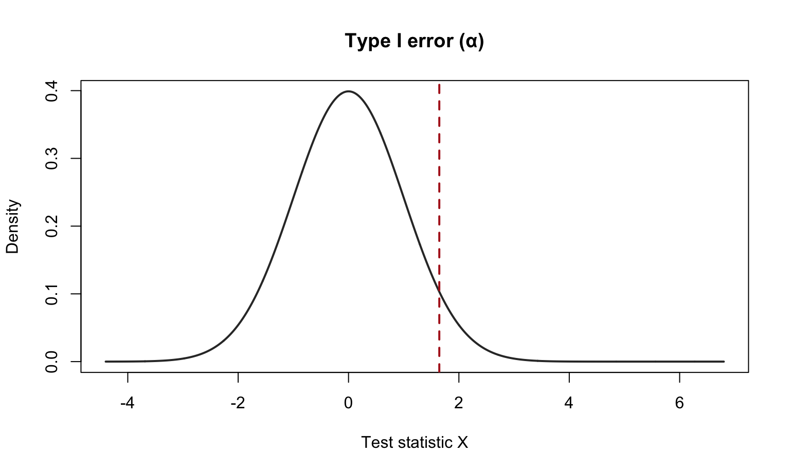
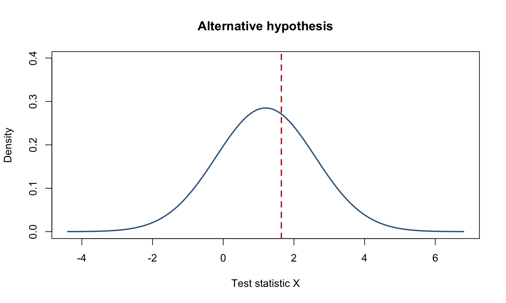
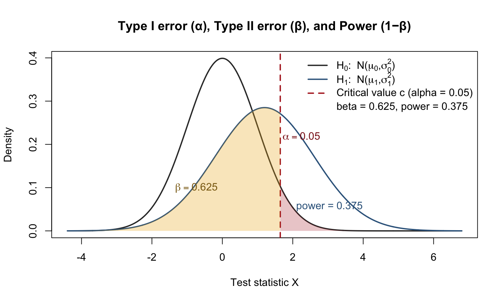
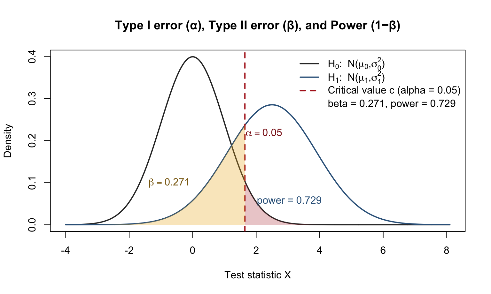
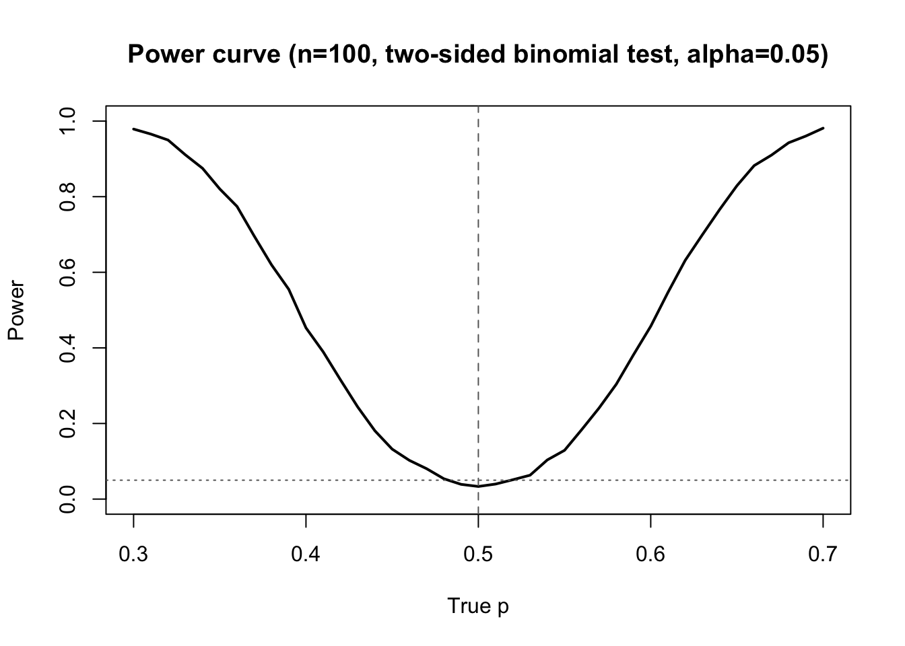

This is a two-sample test that does not assume normality; it assumes the treatment labels were assigned at random (and units are independent).
You observe outcomes from \(n\) units, with \(n_1\) labeled “treatment” and \(n_2\) labeled “control”. To test \[H_0: \text{no treatment effect}\] Under \(H_0\), the outcomes would be the same regardless of who was labeled treated, so the observed treatment labels are exchangeable. Therefore, any reassignment of the treatment labels (keeping \(n_1\) treated) is equally likely.
Procedure
Choose a test statistic \(T\) measuring difference between groups (e.g., \(\bar Y_T-\bar Y_C\)) and compute the observed statistic \(T_{\text{obs}}\).
Re-randomize: repeatedly shuffle the treatment labels (or enumerate all shuffles), recompute \(T\) each time. The p-value is the fraction of shuffles where \(T\) is at least as extreme as \(T_{\text{obs}}\) (two-sided uses \(|T|\)).
Example:
Outcomes: \(y = [5,6,7,8,1,2,3,4]\)
Observed assignment: first 4 are treated, last 4 are control
Treated: \([5,6,7,8]\),
Control: \([1,2,3,4]\)
Test statistic: difference in means \[T = \bar y_T - \bar y_C.\] Observed: \[\bar y_T = 6.5,\quad \bar y_C = 2.5,\quad T_{\text{obs}}=4.0.\] Under \(H_0\), any choice of 4 of the 8 units could have been labeled “treated” (there are \(\binom{8}{4}=70\) assignments). The randomization test:
computes \(T\) for each of the 70 possible labelings, compares them to \(4.0\).
Here, \(T_{\text{obs}}=4.0\) is actually the maximum possible difference in means (treated got the four largest outcomes), so the two-sided randomization p-value is \[p = \frac{1}{70}\approx 0.0143\] (only the observed assignment is as extreme)
Note: Some researchers like discussing effect size, which is defined (assuming both have the same standard deviation) as \[\frac{\mu_{1}-\mu_{2}}{\sigma}\] and estimated by
\[\frac{\bar{x}_{1}-\bar{x}_{2}}{s}\]
Type I and Type II errors
Having set out the mechanics of testing, we can assess how well we are doing. The following table compares different scenarios with our decision whether or not to reject the null hypothesis after we have seen the data.
Truth / Decision
Reject (H_0)
Fail to reject (H_0)
\(H_0\) is true
Type I error ( \(\alpha\) ) False positive
Correct No error
\(H_0\) is false (\(H_1\) true)
Correct Power ( \(1-\beta\) )
Type II error ((\(\beta\))) False negative
Type I = False positive = those silly car alarms
Type II = False negative = my “guard dog” when a burglar breaks in
Power = The probability of correctly rejecting \(H_0\) when it is false (my guard dog actually doing its job.)
A study that has a low probability of Type II error is said to have high power. Power is the probability that a random sample taken from a population will lead to rejection of a false null hypothesis.
We can reduce one of the two error types at the cost of increasing the other one. What is an acceptable trade-off between both of them?
The \(\alpha\)-level controls the Type I rate. It controls the false positive rate. - In a test of level \(\alpha\), we expect \(\alpha\)-fraction of false positives - If we make \(\alpha\) small , we will get many false negatives
Assume \(H_{0}: \mu=0\) and \(H_{A}: \mu>0\) (right-tailed one-sided) and the null distribution is for example Normal(0,1) :
mu0 <-0; sd0 <-1mu1<-1.2sd1<-1.4alpha <-0.05# type I error rate (right-tailed test)crit <-qnorm(1- alpha, mean = mu0, sd = sd0) # rejection threshold under H0x <-seq(min(mu0 -4*sd0, mu1 -4*sd1),max(mu0 +4*sd0, mu1 +4*sd1),length.out =2000)f0 <-dnorm(x, mean = mu0, sd = sd0)# Base plotplot(x, f0, type ="l", lwd =2, col ="gray20",xlab ="Test statistic X", ylab ="Density",main ="Type I error (α)")abline(v = crit, lty =2, lwd =2, col ="firebrick")

Now assume a specific alternative hypothesis, for example a normal with mean 1.2 and sd 1.4.
mu1 <-1.2; sd1 <-1.4# change these to show different mean/variance separationsalpha <-0.05# type I error rate (right-tailed test)crit <-qnorm(1- alpha, mean = mu0, sd = sd0) # rejection threshold under H0# Grid for plotting densitiesx <-seq(min(mu0 -4*sd0, mu1 -4*sd1),max(mu0 +4*sd0, mu1 +4*sd1),length.out =2000)f0 <-dnorm(x, mean = mu0, sd = sd0)f1 <-dnorm(x, mean = mu1, sd = sd1)# Base plotplot(x, f0, type ="l", lwd =2, col ="white",xlab ="Test statistic X", ylab ="Density",main ="Alternative hypothesis")lines(x, f1, lwd =2, col ="steelblue4")abline(v = crit, lty =2, lwd =2, col ="firebrick")

Now let’s put them together
# Two normal models:# H0: X ~ N(mu0, sd0^2)# H1: X ~ N(mu1, sd1^2)mu0 <-0; sd0 <-1mu1 <-1.2; sd1 <-1.4# change these to show different mean/variance separationsalpha <-0.05# type I error rate (right-tailed test)crit <-qnorm(1- alpha, mean = mu0, sd = sd0) # rejection threshold under H0# Type II error under H1: P_H1(X <= crit)beta <-pnorm(crit, mean = mu1, sd = sd1)power <-1- beta# Grid for plotting densitiesx <-seq(min(mu0 -4*sd0, mu1 -4*sd1),max(mu0 +4*sd0, mu1 +4*sd1),length.out =2000)f0 <-dnorm(x, mean = mu0, sd = sd0)f1 <-dnorm(x, mean = mu1, sd = sd1)# Base plotplot(x, f0, type ="l", lwd =2, col ="gray20",xlab ="Test statistic X", ylab ="Density",main ="Type I error (α), Type II error (β), and Power (1−β)")lines(x, f1, lwd =2, col ="steelblue4")abline(v = crit, lty =2, lwd =2, col ="firebrick")legend("topright",legend =c(expression(H[0]*": N("*mu[0]*","*sigma[0]^2*")"),expression(H[1]*": N("*mu[1]*","*sigma[1]^2*")"),sprintf("Critical value c (alpha = %.2f)", alpha),sprintf("beta = %.3f, power = %.3f", beta, power)),col =c("gray20", "steelblue4", "firebrick", NA),lwd =c(2, 2, 2, NA), lty =c(1, 1, 2, NA),bty ="n")# Shade Type I error: area under H0 to the right of critxx <- x[x >= crit]polygon(c(xx, rev(xx)),c(dnorm(xx, mu0, sd0), rep(0, length(xx))),col =adjustcolor("firebrick", 0.25), border =NA)text(crit +0.6*sd0, max(f0)*0.55,labels =bquote(alpha == .(alpha)),col ="firebrick4")# Shade Type II error: area under H1 to the left of critxx <- x[x <= crit]polygon(c(xx, rev(xx)),c(dnorm(xx, mu1, sd1), rep(0, length(xx))),col =adjustcolor("goldenrod2", 0.30), border =NA)text(crit -1.7*sd1, max(f1)*0.35,labels =bquote(beta == .(round(beta, 3))),col ="goldenrod4")# Optional: label power region (right of crit under H1)text(crit +1.0*sd1, max(f1)*0.20,labels =bquote("power ="~.(round(power, 3))),col ="steelblue4")

What happens if we shift the alternative distribution?
# Two normal models:# H0: X ~ N(mu0, sd0^2)# H1: X ~ N(mu1, sd1^2)mu0 <-0; sd0 <-1mu1 <-2.5; sd1 <-1.4# change these to show different mean/variance separationsalpha <-0.05# type I error rate (right-tailed test)crit <-qnorm(1- alpha, mean = mu0, sd = sd0) # rejection threshold under H0# Type II error under H1: P_H1(X <= crit)beta <-pnorm(crit, mean = mu1, sd = sd1)power <-1- beta# Grid for plotting densitiesx <-seq(min(mu0 -4*sd0, mu1 -4*sd1),max(mu0 +4*sd0, mu1 +4*sd1),length.out =2000)f0 <-dnorm(x, mean = mu0, sd = sd0)f1 <-dnorm(x, mean = mu1, sd = sd1)# Base plotplot(x, f0, type ="l", lwd =2, col ="gray20",xlab ="Test statistic X", ylab ="Density",main ="Type I error (α), Type II error (β), and Power (1−β)")lines(x, f1, lwd =2, col ="steelblue4")abline(v = crit, lty =2, lwd =2, col ="firebrick")legend("topright",legend =c(expression(H[0]*": N("*mu[0]*","*sigma[0]^2*")"),expression(H[1]*": N("*mu[1]*","*sigma[1]^2*")"),sprintf("Critical value c (alpha = %.2f)", alpha),sprintf("beta = %.3f, power = %.3f", beta, power)),col =c("gray20", "steelblue4", "firebrick", NA),lwd =c(2, 2, 2, NA), lty =c(1, 1, 2, NA),bty ="n")# Shade Type I error: area under H0 to the right of critxx <- x[x >= crit]polygon(c(xx, rev(xx)),c(dnorm(xx, mu0, sd0), rep(0, length(xx))),col =adjustcolor("firebrick", 0.25), border =NA)text(crit +0.6*sd0, max(f0)*0.55,labels =bquote(alpha == .(alpha)),col ="firebrick4")# Shade Type II error: area under H1 to the left of critxx <- x[x <= crit]polygon(c(xx, rev(xx)),c(dnorm(xx, mu1, sd1), rep(0, length(xx))),col =adjustcolor("goldenrod2", 0.30), border =NA)text(crit -1.7*sd1, max(f1)*0.35,labels =bquote(beta == .(round(beta, 3))),col ="goldenrod4")# Optional: label power region (right of crit under H1)text(crit +1.0*sd1, max(f1)*0.20,labels =bquote("power ="~.(round(power, 3))),col ="steelblue4")

Power
Consider the coin tosing example:
set.seed(1)numFlips <-100alpha <-0.05p0 <-0.5# Two-sided exact binomial test: reject if p-value <= alphareject_binom <-function(p, n = numFlips, p0 =0.5, alpha =0.05) { x <-rbinom(1, size = n, prob = p)binom.test(x, n, p = p0, alternative ="two.sided")$p.value <= alpha}# Estimate power by simulation for a grid of true p valuesp_grid <-seq(0.3, 0.7, by =0.01)B <-5000# increase for smoother curvepower_hat <-sapply(p_grid, function(p) mean(replicate(B, reject_binom(p))))power_df <-data.frame(p = p_grid, power = power_hat)# Plot power curveplot(power ~ p, data = power_df, type ="l", lwd =2,ylim =c(0, 1), xlab ="True p", ylab ="Power",main =sprintf("Power curve (n=%d, two-sided binomial test, alpha=%.2f)", numFlips, alpha))abline(v = p0, lty =2, col ="gray40")abline(h = alpha, lty =3, col ="gray40")

False Discovery Rate (FDR) (many hypotheses)
When you test many hypotheses at once, some “significant” results will occur just by chance. In this setting, we often care about the False Discovery Rate (FDR).
False discovery rate control helps filter out results that look significant but are likely false positives.
where
- \(R\) = number of rejected null hypotheses (“discoveries”),
- \(V\) = number of those rejections that are actually wrong (false discoveries / false positives).
FDR is the expected proportion of false positives among all findings you call significant.
So, controlling FDR at (say) 5% means: on average, no more than about 5% of your reported discoveries are false positives.
How it differs from \(\alpha\):
- \(\alpha\) controls the chance of a false positive for a single test (or the per-test error rate).
- FDR controls the mix of errors among the set of all rejected hypotheses, which is typically more relevant in large-scale testing (genomics, A/B tests at scale, multiple endpoints, etc.).